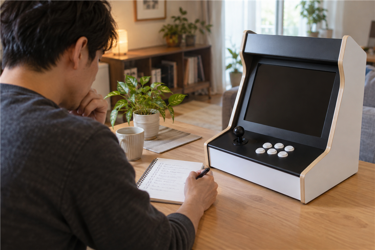

게임 수가 많은 오락기가 항상 더 좋은 선택은 아닙니다. 자주 하고 싶은 게임이 실제로 포함되는지, 그 게임을 편하게 조작할 수 있는 형태인지, 집에 설치할 환경과 맞는지를 먼저 확인하세요. 게임 수는 비교 항목 중 하나로 두고, 확인한 목록과 사용 환경을 함께 보아야 합니다.

먼저 자주 할 게임의 기준을 적어보세요
어릴 때 즐긴 게임, 가족이나 친구와 함께 할 게임, 혼자 잠깐 즐길 게임처럼 우선순위를 나눠 적어 보세요. 막연히 많은 게임보다 실제로 실행할 게임이 몇 개인지 확인하는 편이 선택에 도움이 됩니다. 장르나 시리즈 이름만으로 포함 여부를 단정하지 말고, 구매 전 판매 페이지나 판매자 안내에서 직접 확인하세요.
게임 수보다 자주 할 게임이 실제로 포함되는지가 먼저 확인할 기준입니다.
- 꼭 확인할 게임 이름이나 장르
- 함께 사용할 사람과 조작 인원
- 화면·TV 연결이 필요한지
- 설치할 공간과 이용 시간
원하는 게임이 들어 있는지 구매 전에 확인하는 방법도 함께 참고할 수 있습니다.
게임 수는 구성 방식과 함께 보세요
게임 수가 적혀 있어도 그 숫자에 어떤 게임이 포함되는지, 같은 게임의 다른 버전이 있는지, 본인이 이용할 게임이 실제로 있는지는 별도로 확인해야 합니다. 노리박스 제품 목록에는 게임팩, TV 연결형, 분리형과 신형HX처럼 서로 다른 형태의 상품이 별도 안내되어 있습니다. 따라서 숫자만으로 같은 구성이라고 보기보다 상품명과 구성 설명을 대조하는 편이 좋습니다.
표시된 게임 수는 상품명과 구성 설명을 함께 읽을 때 비교 기준이 됩니다.
조작과 설치 환경도 같이 확인하세요
좋아하는 게임이 포함되어도 조작부 형태나 설치 위치가 맞지 않으면 자주 사용하기 어렵습니다. 스탠드형인지 TV 연결형인지, 조작부를 어디에 둘지, 화면과 전원 연결을 어떻게 할지 미리 살펴보세요. 같은 게임이라도 사용할 장소와 함께 하는 사람에 따라 편한 형태가 달라질 수 있습니다.
게임 선택과 기기 형태는 실제 설치할 장소에서 함께 판단해야 합니다.
가정용 오락기 설치 전 확인 항목에서 장소와 연결 준비를 점검할 수 있습니다.
확인한 목록으로 판매자에게 질문하세요
구매 전에는 꼭 하고 싶은 게임 목록과 설치 환경을 정리해 판매자에게 전달하세요. 노리박스 사이트의 제품자세히보기에서 상품 형태와 판매 페이지를 확인하고, 목록에 없는 내용은 연락하기에서 문의 채널을 확인할 수 있습니다. 포함 여부와 안내 범위는 상품과 시점에 따라 달라질 수 있으므로 답변을 받은 뒤 결정하세요.
구매 전 질문은 게임 이름과 사용할 환경을 함께 전달할수록 확인하기 쉽습니다.
마지막에는 실제 이용 장면을 떠올려 보세요
게임 수가 많아도 처음 몇 번만 실행할 목록이라면 본인에게 중요한 기준이 아닐 수 있습니다. 반대로 가족이 함께 할 게임이나 자주 찾는 게임이 확인됐다면, 그 게임을 편하게 사용할 형태인지 다시 살펴보세요. 확인되지 않은 내용은 추측하지 말고 빈칸으로 두었다가 판매자에게 물어보는 것이 좋습니다.
가정용 오락기 선택은 게임 수보다 실제로 반복해서 즐길 구성이 맞는지로 정하는 편이 좋습니다.